Last updated: 2026-02-24
Checks: 7 0
Knit directory: methyl_nano_cf/analysis/
This reproducible R Markdown analysis was created with workflowr (version 1.7.1). The Checks tab describes the reproducibility checks that were applied when the results were created. The Past versions tab lists the development history.
Great! Since the R Markdown file has been committed to the Git repository, you know the exact version of the code that produced these results.
Great job! The global environment was empty. Objects defined in the global environment can affect the analysis in your R Markdown file in unknown ways. For reproduciblity it’s best to always run the code in an empty environment.
The command set.seed(20250606) was run prior to running
the code in the R Markdown file. Setting a seed ensures that any results
that rely on randomness, e.g. subsampling or permutations, are
reproducible.
Great job! Recording the operating system, R version, and package versions is critical for reproducibility.
Nice! There were no cached chunks for this analysis, so you can be confident that you successfully produced the results during this run.
Great job! Using relative paths to the files within your workflowr project makes it easier to run your code on other machines.
Great! You are using Git for version control. Tracking code development and connecting the code version to the results is critical for reproducibility.
The results in this page were generated with repository version a13af1b. See the Past versions tab to see a history of the changes made to the R Markdown and HTML files.
Note that you need to be careful to ensure that all relevant files for
the analysis have been committed to Git prior to generating the results
(you can use wflow_publish or
wflow_git_commit). workflowr only checks the R Markdown
file, but you know if there are other scripts or data files that it
depends on. Below is the status of the Git repository when the results
were generated:
Ignored files:
Ignored: .Rproj.user/
Untracked files:
Untracked: renv.lock
Untracked: renv/
Unstaged changes:
Modified: .Rprofile
Modified: _workflowr.yml
Note that any generated files, e.g. HTML, png, CSS, etc., are not included in this status report because it is ok for generated content to have uncommitted changes.
These are the previous versions of the repository in which changes were
made to the R Markdown (analysis/slidingWindowAlpha.Rmd)
and HTML (docs/slidingWindowAlpha.html) files. If you’ve
configured a remote Git repository (see ?wflow_git_remote),
click on the hyperlinks in the table below to view the files as they
were in that past version.
| File | Version | Author | Date | Message |
|---|---|---|---|---|
| Rmd | a13af1b | caitlinpage | 2026-02-24 | wflow_publish("slidingWindowAlpha.Rmd") |
| Rmd | 2871c59 | caitlinpage | 2026-02-23 | made windows, trying to plot and stats |
Also sliding windows anchored at a cpg and make fake alphas, only cpgs in that region, and have window same as read length More controllable to work with Be able to inform cpgs
library(annotatr)Warning: replacing previous import 'S4Arrays::makeNindexFromArrayViewport' by
'DelayedArray::makeNindexFromArrayViewport' when loading 'SummarizedExperiment'library(data.table)
library(plyranges)Loading required package: BiocGenerics
Attaching package: 'BiocGenerics'The following objects are masked from 'package:stats':
IQR, mad, sd, var, xtabsThe following objects are masked from 'package:base':
anyDuplicated, aperm, append, as.data.frame, basename, cbind,
colnames, dirname, do.call, duplicated, eval, evalq, Filter, Find,
get, grep, grepl, intersect, is.unsorted, lapply, Map, mapply,
match, mget, order, paste, pmax, pmax.int, pmin, pmin.int,
Position, rank, rbind, Reduce, rownames, sapply, saveRDS, setdiff,
table, tapply, union, unique, unsplit, which.max, which.minLoading required package: IRangesLoading required package: S4VectorsLoading required package: stats4
Attaching package: 'S4Vectors'The following objects are masked from 'package:data.table':
first, secondThe following object is masked from 'package:utils':
findMatchesThe following objects are masked from 'package:base':
expand.grid, I, unname
Attaching package: 'IRanges'The following object is masked from 'package:data.table':
shiftLoading required package: GenomicRangesLoading required package: GenomeInfoDb
Attaching package: 'plyranges'The following object is masked from 'package:IRanges':
sliceThe following object is masked from 'package:data.table':
betweenThe following object is masked from 'package:stats':
filterlibrary(tidyr)
Attaching package: 'tidyr'The following object is masked from 'package:S4Vectors':
expandlibrary(stringr)
library(dplyr)
Attaching package: 'dplyr'The following objects are masked from 'package:plyranges':
between, n, n_distinctThe following objects are masked from 'package:GenomicRanges':
intersect, setdiff, unionThe following object is masked from 'package:GenomeInfoDb':
intersectThe following objects are masked from 'package:IRanges':
collapse, desc, intersect, setdiff, slice, unionThe following objects are masked from 'package:S4Vectors':
first, intersect, rename, setdiff, setequal, unionThe following objects are masked from 'package:BiocGenerics':
combine, intersect, setdiff, unionThe following objects are masked from 'package:data.table':
between, first, lastThe following objects are masked from 'package:stats':
filter, lagThe following objects are masked from 'package:base':
intersect, setdiff, setequal, unionlibrary(ggplot2)cg_sites <- cbind(data.frame(Biostrings::matchPattern("CG", BSgenome.Hsapiens.UCSC.hg38::BSgenome.Hsapiens.UCSC.hg38[["chr22"]])), seqnames = "chr22") %>%
mutate(pos = paste0(seqnames, "-", start)) %>%
relocate(pos, seqnames)Warning in .local(x, row.names, optional, ...): 'optional' argument was ignoredcg_sites$index <- 1:nrow(cg_sites)source("../code/processData.R")
for_beta_all <- readRDS("/researchers/caitlin.page/cf_nano/r_output/rrbs_alpha_beta.rds")
#for_beta <- readRDS("../output/cluster_files/rrbs_alpha_beta.rds")
for_beta <- for_beta_all %>% filter(seqnames == "chr22")
rrbs_for_beta_pat <- pat_for_wgbs(for_beta)`summarise()` has grouped output by 'seqnames', 'start_pos', 'meth_pattern',
'alpha', 'end_pos'. You can override using the `.groups` argument.for_beta <- for_beta %>% group_by(start) %>% mutate(coverage = n(), mean_alpha = mean(alpha)) %>% ungroup() %>% data.frame()
just_beta <- for_beta %>% distinct(start, beta, coverage, mean_alpha) %>% .[order(.$start),]annots <- c("hg38_cpgs")
annotations <- annotatr::build_annotations(genome = 'hg38', annotations = annots)Building CpG islands...Building CpG shores...Building CpG shelves...Building inter-CpG-islands...seqs <- annotations %>% data.frame() %>% distinct(seqnames) %>% .[1:22,]
annotations <- annotations %>% data.frame() %>% filter(seqnames %in% seqs)for_beta <- find_overlaps(as_granges(for_beta), as_granges(annotations)) %>% data.frame() %>%
mutate(cgi = ifelse(type == "hg38_cpg_islands", "island", "not_island"))annots <- c("hg38_basicgenes", "hg38_genes_intergenic")
annotations <- annotatr::build_annotations(genome = 'hg38', annotations = annots)Loading required package: GenomicFeaturesLoading required package: AnnotationDbiLoading required package: BiobaseWelcome to Bioconductor
Vignettes contain introductory material; view with
'browseVignettes()'. To cite Bioconductor, see
'citation("Biobase")', and for packages 'citation("pkgname")'.
Attaching package: 'AnnotationDbi'The following object is masked from 'package:dplyr':
selectThe following object is masked from 'package:plyranges':
select'select()' returned 1:1 mapping between keys and columnsBuilding promoters...Building 1to5kb upstream of TSS...Building intergenic...Building 5UTRs...Building 3UTRs...Building exons...Building introns...seqs <- annotations %>% data.frame() %>% distinct(seqnames) %>% .[1:22,]
annotations <- annotations %>% data.frame() %>% filter(seqnames %in% seqs)
annotations %>% group_by(type) %>% summarise(n=n())# A tibble: 7 × 2
type n
<chr> <int>
1 hg38_genes_1to5kb 244912
2 hg38_genes_3UTRs 204002
3 hg38_genes_5UTRs 168322
4 hg38_genes_exons 1606422
5 hg38_genes_intergenic 21513
6 hg38_genes_introns 1361510
7 hg38_genes_promoters 244912for_beta_genes <- find_overlaps(as_granges(for_beta), as_granges(annotations)) %>% data.frame()
for_beta_genes[1:10,] seqnames start end width strand read_id
1 chr22 39994598 39994598 1 + HWI-EAS149_7:1:100:1003:1410:0:1:1
2 chr22 39994598 39994598 1 + HWI-EAS149_7:1:100:1003:1410:0:1:1
3 chr22 39994607 39994607 1 - HWI-EAS149_7:1:100:1003:1410:0:1:1
4 chr22 39994607 39994607 1 - HWI-EAS149_7:1:100:1003:1410:0:1:1
5 chr22 39994611 39994611 1 - HWI-EAS149_7:1:100:1003:1410:0:1:1
6 chr22 39994611 39994611 1 - HWI-EAS149_7:1:100:1003:1410:0:1:1
7 chr22 39994613 39994613 1 - HWI-EAS149_7:1:100:1003:1410:0:1:1
8 chr22 39994613 39994613 1 - HWI-EAS149_7:1:100:1003:1410:0:1:1
9 chr22 39994626 39994626 1 + HWI-EAS149_7:1:100:1003:1410:0:1:1
10 chr22 39994626 39994626 1 + HWI-EAS149_7:1:100:1003:1410:0:1:1
meth_status meth_pattern num_meth total alpha
1 M MUUUMU 2 6 0.3333333
2 M MUUUMU 2 6 0.3333333
3 U MUUUMU 2 6 0.3333333
4 U MUUUMU 2 6 0.3333333
5 U MUUUMU 2 6 0.3333333
6 U MUUUMU 2 6 0.3333333
7 U MUUUMU 2 6 0.3333333
8 U MUUUMU 2 6 0.3333333
9 M MUUUMU 2 6 0.3333333
10 M MUUUMU 2 6 0.3333333
genom_positions read_start read_end
1 39994598,39994607,39994611,39994613,39994626,39994632 39994598 39994632
2 39994598,39994607,39994611,39994613,39994626,39994632 39994598 39994632
3 39994598,39994607,39994611,39994613,39994626,39994632 39994598 39994632
4 39994598,39994607,39994611,39994613,39994626,39994632 39994598 39994632
5 39994598,39994607,39994611,39994613,39994626,39994632 39994598 39994632
6 39994598,39994607,39994611,39994613,39994626,39994632 39994598 39994632
7 39994598,39994607,39994611,39994613,39994626,39994632 39994598 39994632
8 39994598,39994607,39994611,39994613,39994626,39994632 39994598 39994632
9 39994598,39994607,39994611,39994613,39994626,39994632 39994598 39994632
10 39994598,39994607,39994611,39994613,39994626,39994632 39994598 39994632
beta coverage mean_alpha id.x tx_id.x gene_id.x symbol.x
1 0.7826087 23 0.6144928 island:26571 NA NA NA
2 0.7826087 23 0.6144928 island:26571 NA NA NA
3 0.6363636 22 0.6060606 island:26571 NA NA NA
4 0.6363636 22 0.6060606 island:26571 NA NA NA
5 0.7391304 23 0.6144928 island:26571 NA NA NA
6 0.7391304 23 0.6144928 island:26571 NA NA NA
7 0.8260870 23 0.6144928 island:26571 NA NA NA
8 0.8260870 23 0.6144928 island:26571 NA NA NA
9 0.3913043 23 0.6144928 island:26571 NA NA NA
10 0.3913043 23 0.6144928 island:26571 NA NA NA
type.x cgi id.y tx_id.y gene_id.y
1 hg38_cpg_islands island promoter:241632 ENST00000333407.11 113828
2 hg38_cpg_islands island promoter:241633 ENST00000488874.1 113828
3 hg38_cpg_islands island promoter:241632 ENST00000333407.11 113828
4 hg38_cpg_islands island promoter:241633 ENST00000488874.1 113828
5 hg38_cpg_islands island promoter:241632 ENST00000333407.11 113828
6 hg38_cpg_islands island promoter:241633 ENST00000488874.1 113828
7 hg38_cpg_islands island promoter:241632 ENST00000333407.11 113828
8 hg38_cpg_islands island promoter:241633 ENST00000488874.1 113828
9 hg38_cpg_islands island promoter:241632 ENST00000333407.11 113828
10 hg38_cpg_islands island promoter:241633 ENST00000488874.1 113828
symbol.y type.y
1 FAM83F hg38_genes_promoters
2 FAM83F hg38_genes_promoters
3 FAM83F hg38_genes_promoters
4 FAM83F hg38_genes_promoters
5 FAM83F hg38_genes_promoters
6 FAM83F hg38_genes_promoters
7 FAM83F hg38_genes_promoters
8 FAM83F hg38_genes_promoters
9 FAM83F hg38_genes_promoters
10 FAM83F hg38_genes_promotersanchor at a CpG
window extends +/- from it
new alpha for each read is calculated based on the number of CpGs within the window
make the window length the read length
this sample the reads are 36bp (I know it’s crazy)
make a granges of windows? - and then overlap and recalculate?
windows <- for_beta %>% distinct(seqnames, start) %>%
mutate(index = start, start = index - 18, end = index + 18) %>% as_granges() for_beta_window <- find_overlaps(windows, as_granges(mutate(for_beta, cpg_pos = start))) %>% data.frame() %>%
group_by(index, read_id) %>%
mutate(window_total = n(),
window_pattern = paste0(meth_status, collapse = ""),
window_meth = str_count(window_pattern, pattern = "M"),
window_unmeth = str_count(window_pattern, pattern = "U"),
window_alpha = window_meth/window_total) %>%
ungroup()
for_beta_window %>% distinct(index, read_id, alpha, window_alpha, meth_pattern, window_pattern) %>% .[1:10,]# A tibble: 10 × 6
index read_id alpha window_alpha meth_pattern window_pattern
<int> <chr> <dbl> <dbl> <chr> <chr>
1 39994598 HWI-EAS149_7:1:100:1… 0.333 0.25 MUUUMU MUUU
2 39994598 HWI-EAS149_7:1:101:1… 0.333 0.25 MUUUMU MUUU
3 39994598 HWI-EAS149_7:1:110:2… 0.333 0.5 UMUMUU UMUM
4 39994598 HWI-EAS149_7:1:14:11… 0.833 1 MMMMMU MMMM
5 39994598 HWI-EAS149_7:1:19:12… 0.167 0.25 UUMUUU UUMU
6 39994598 HWI-EAS149_7:1:46:27… 0.667 1 MMMMUU MMMM
7 39994598 HWI-EAS149_7:1:5:133… 0.167 0.25 UUUMUU UUUM
8 39994598 HWI-EAS149_7:1:61:83… 0.333 0.25 UUUMUM UUUM
9 39994598 HWI-EAS149_7:1:71:46… 0.833 0.75 MUMMMM MUMM
10 39994598 HWI-EAS149_7:1:8:130… 0.667 1 MMMMUU MMMM for_beta_window %>% distinct(index, read_id, alpha, window_alpha, meth_pattern, window_pattern) %>%
group_by(read_id) %>%
summarise(n_window = n()) %>%
ggplot(aes(x = n_window)) +
geom_histogram() +
theme_bw()`stat_bin()` using `bins = 30`. Pick better value with `binwidth`.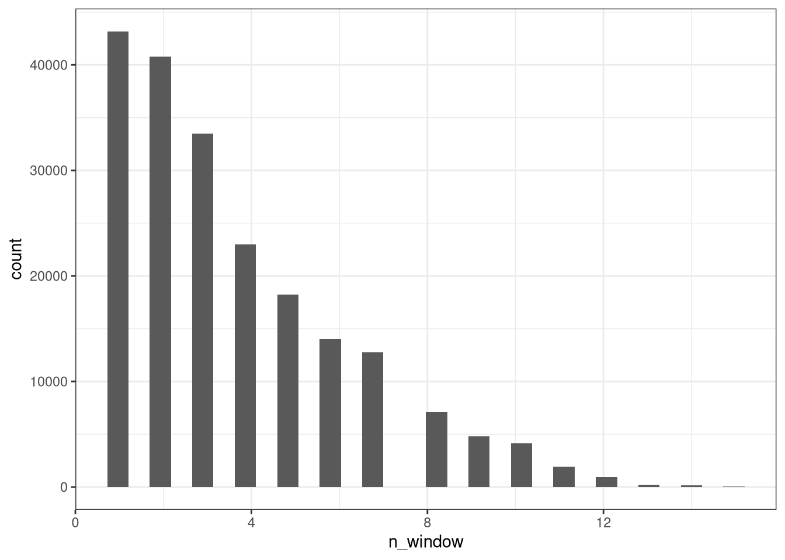
* this reflects CpG density? - I think?for_beta_window %>% distinct(index, read_id, alpha, window_alpha, meth_pattern, window_pattern, total) %>%
group_by(read_id, total) %>%
summarise(n_window = n()) %>%
ggplot(aes(x = total, y = n_window)) +
geom_count() +
theme_bw()`summarise()` has grouped output by 'read_id'. You can override using the
`.groups` argument.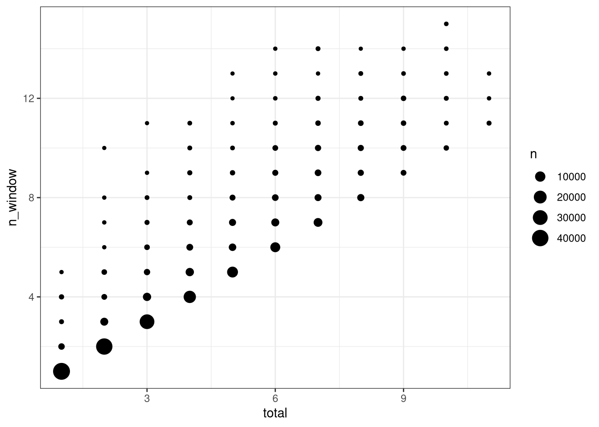
for_beta_window %>% distinct(index, read_id, alpha, window_alpha, meth_pattern, window_pattern) %>%
group_by(read_id) %>%
mutate(n_window = n()) %>%
ungroup() %>%
filter(n_window == 12) %>% distinct(read_id) %>% nrow()[1] 909for_beta_window %>% distinct(index, read_id, alpha, window_alpha, meth_pattern, window_pattern) %>%
group_by(read_id) %>%
mutate(n_window = n()) %>%
ungroup() %>%
filter(n_window == 12) %>% .[1:5,]# A tibble: 5 × 7
index read_id alpha window_alpha meth_pattern window_pattern n_window
<int> <chr> <dbl> <dbl> <chr> <chr> <int>
1 40370882 HWI-EAS149_7… 0 0 UUUUUUU UUUUU 12
2 40370882 HWI-EAS149_7… 0 0 UUUUUUU UUUUU 12
3 40370882 HWI-EAS149_7… 0 0 UUUUUUU UUUUU 12
4 40370882 HWI-EAS149_7… 0 0 UUUUUUU UUUUU 12
5 40370882 HWI-EAS149_7… 0.143 0.2 MUUUUUU MUUUU 12for_beta_window %>% filter(read_id == "HWI-EAS149_7:1:100:1168:337:0:1:1") %>%
ggplot(aes(x = index, y = window_total)) +
geom_point()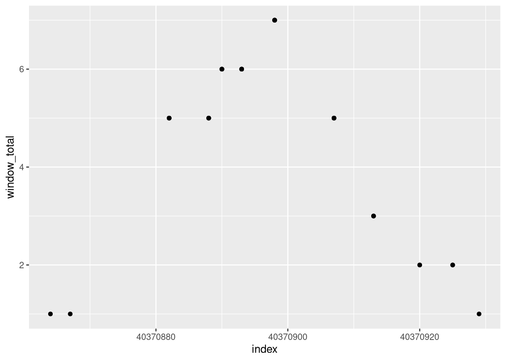
each read will now have multiple alphas
also we now have an alpha for the window, and the original alpha
are the new alphas more correlated to each other? - and how do they compare to the original?
for_beta_window %>% distinct(index, read_id, alpha, window_alpha, meth_pattern, window_pattern, total, window_total) %>%
ggplot(aes(x = alpha, y = window_alpha)) +
geom_count() +
theme_bw()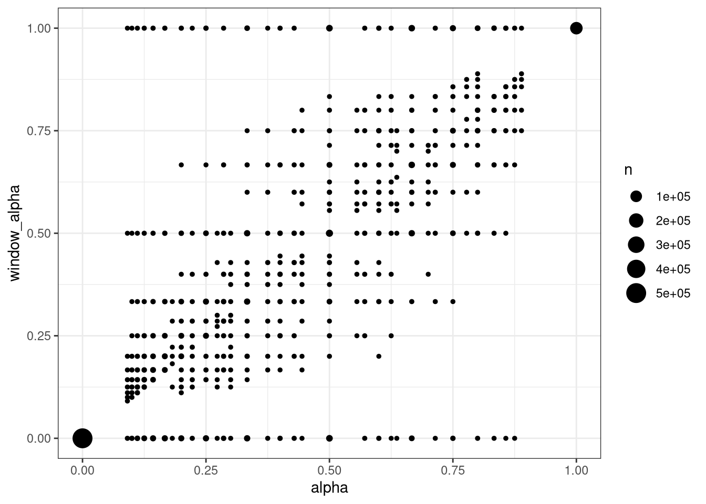
for_beta_window %>% distinct(index, read_id, alpha, window_alpha, meth_pattern, window_pattern, total, window_total) %>%
ggplot(aes(x = alpha, y = window_alpha)) +
geom_point(alpha = 0.4) +
theme_bw()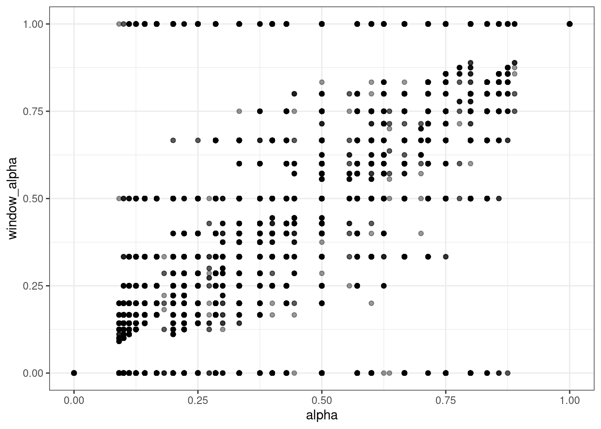
for_beta_window %>% distinct(index, read_id, alpha, window_alpha, meth_pattern, window_pattern, total, window_total) %>%
group_by(index) %>%
summarise(n_read = n()) %>%
ggplot(aes(x = n_read)) +
geom_histogram(bins = 100) +
theme_bw()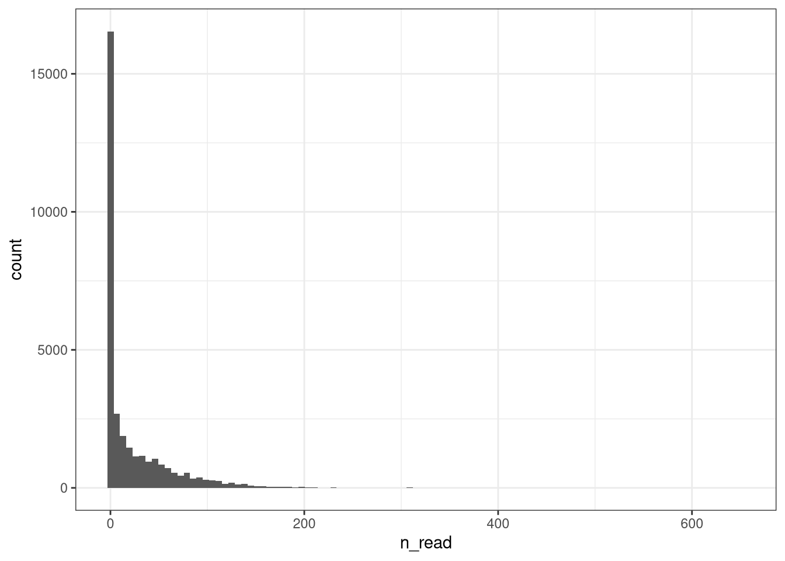
for_beta_window %>% distinct(index, read_id, alpha, window_alpha, meth_pattern, window_pattern, total, window_total) %>%
group_by(index) %>%
mutate(n_read = n()) %>%
filter(n_read > 1) %>%
ggplot(aes(x = n_read)) +
geom_histogram(bins = 50) +
theme_bw()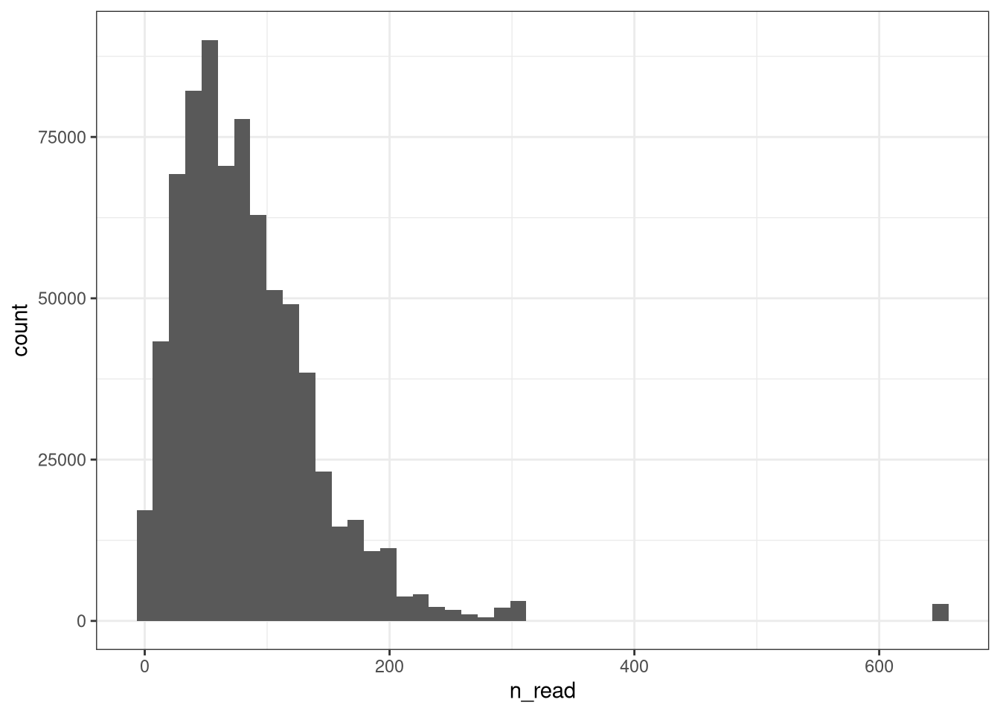
for_beta_window %>% distinct(index, read_id, alpha, window_alpha, meth_pattern, window_pattern, total, window_total) %>%
group_by(index) %>%
mutate(n_read = n()) %>%
ungroup() %>% summarise(mean(n_read), sd(n_read), median(n_read))# A tibble: 1 × 3
`mean(n_read)` `sd(n_read)` `median(n_read)`
<dbl> <dbl> <dbl>
1 82.2 63.0 72for_beta_window %>% distinct(index, read_id, alpha, window_alpha, meth_pattern, window_pattern, total, window_total) %>%
group_by(index) %>%
mutate(n_read = n()) %>%
ungroup() %>% .[order(.$index),] %>% filter(index <= 10571837) %>%
ggplot(aes(x = window_alpha, colour = as.factor(index))) +
geom_density() +
theme_bw()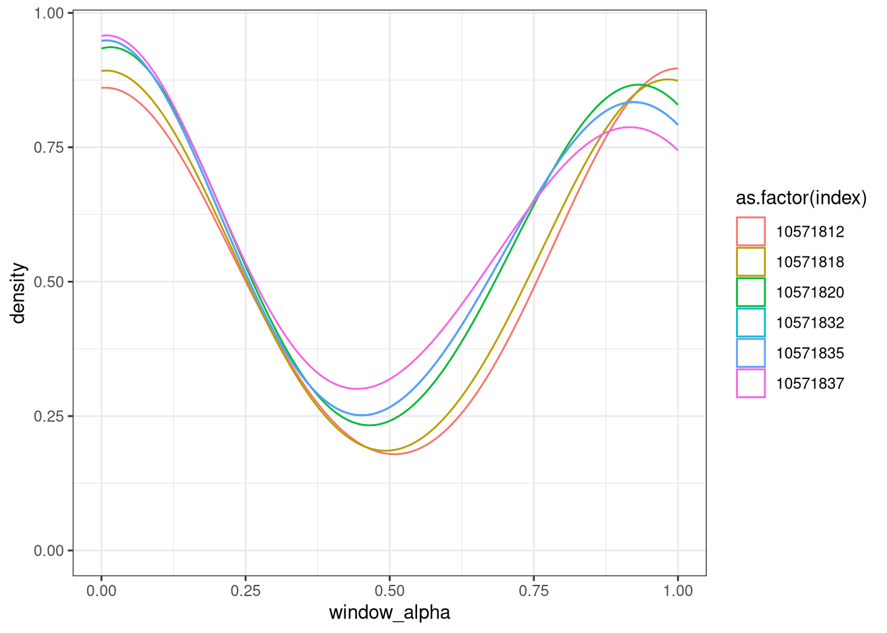
for_beta_window %>% distinct(index, read_id, alpha, window_alpha, meth_pattern, window_pattern, total, window_total) %>%
group_by(index) %>%
mutate(n_read = n()) %>%
ungroup() %>% .[order(.$index),] %>% filter(index <= 10571837) %>%
ggplot(aes(x = window_alpha, colour = as.factor(index)), fill = as.factor(index)) +
geom_histogram(alpha = 0.4) +
theme_bw()`stat_bin()` using `bins = 30`. Pick better value with `binwidth`.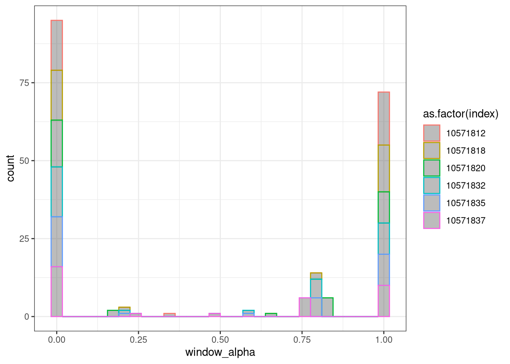
for_beta_window %>% distinct(index, read_id, alpha, window_alpha, meth_pattern, window_pattern, total, window_total) %>%
group_by(index) %>%
mutate(n_read = n()) %>%
ungroup() %>% .[order(.$index),] %>% filter(index <= 10571837) %>%
ggplot(aes(x = alpha, colour = as.factor(index))) +
geom_density() +
theme_bw()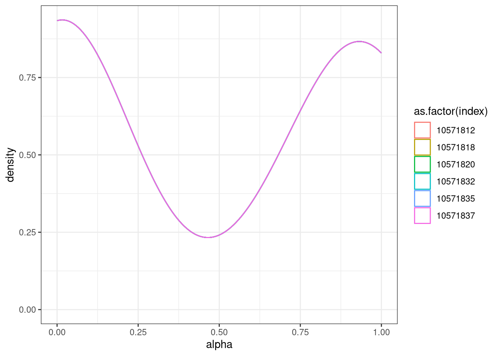
for_beta_window %>% distinct(index, read_id, alpha, window_alpha, meth_pattern, window_pattern, total, window_total) %>%
group_by(index) %>%
mutate(n_read = n(),
mean_alpha = mean(alpha),
mean_window_alpha = mean(window_alpha),
var_alpha = var(alpha),
var_window_alpha = var(window_alpha)) %>%
ungroup() %>%
.[,c(1,10:13)] %>%
reshape2::melt(id = "index") %>% distinct() %>% .[order(.$index),] %>% .[1:10,] index variable value
3708 10571812 mean_alpha 0.4705882
36319 10571812 mean_window_alpha 0.5098039
68930 10571812 var_alpha 0.2162805
101541 10571812 var_window_alpha 0.2507427
3709 10571818 mean_alpha 0.4705882
36320 10571818 mean_window_alpha 0.4941176
68931 10571818 var_alpha 0.2162805
101542 10571818 var_window_alpha 0.2429947
3710 10571820 mean_alpha 0.4705882
36321 10571820 mean_window_alpha 0.4705882for_beta_window %>% distinct(index, read_id, alpha, window_alpha, meth_pattern, window_pattern, total, window_total) %>%
group_by(index) %>%
mutate(n_read = n(),
mean_alpha = mean(alpha),
mean_window_alpha = mean(window_alpha),
var_alpha = var(alpha),
var_window_alpha = var(window_alpha)) %>%
ungroup() %>%
ggplot(aes(x = mean_alpha, y = mean_window_alpha)) +
geom_point(alpha = 0.4) +
theme_bw()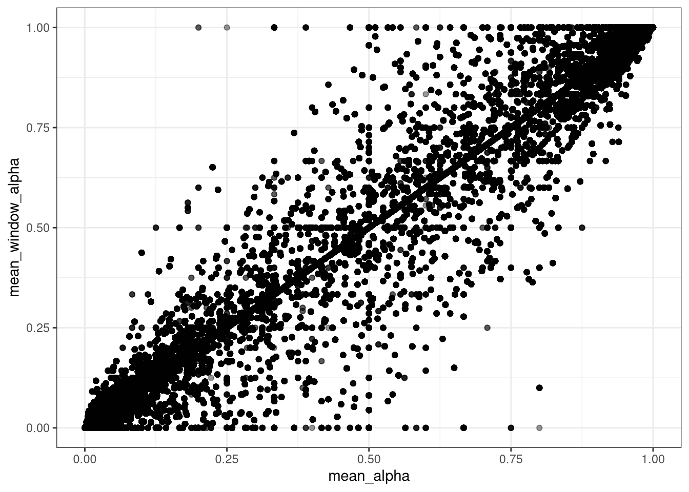
for_beta_window %>% distinct(index, read_id, alpha, window_alpha, meth_pattern, window_pattern, total, window_total) %>%
group_by(index) %>%
mutate(n_read = n(),
mean_alpha = mean(alpha),
mean_window_alpha = mean(window_alpha),
var_alpha = var(alpha),
var_window_alpha = var(window_alpha)) %>%
ungroup() %>%
ggplot(aes(x = var_alpha, y = var_window_alpha)) +
geom_point(alpha = 0.4) +
theme_bw()Warning: Removed 12540 rows containing missing values or values outside the scale range
(`geom_point()`).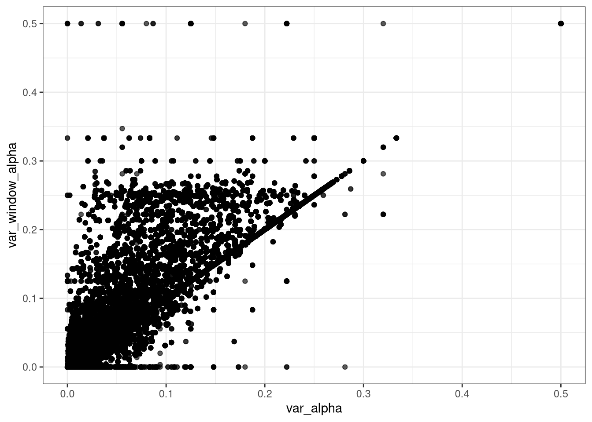
for_beta_window %>% distinct(index, read_id, alpha, window_alpha, meth_pattern, window_pattern, total, window_total) %>%
group_by(index) %>%
mutate(n_read = n(),
mean_alpha = mean(alpha),
mean_window_alpha = mean(window_alpha),
var_alpha = var(alpha),
var_window_alpha = var(window_alpha)) %>%
ungroup() %>%
.[,c(1,12:13)] %>%
reshape2::melt(id = "index") %>% distinct() %>% .[order(.$index),] %>%
ggplot(aes(x = value, colour = variable)) +
geom_density() +
theme_bw()Warning: Removed 25080 rows containing non-finite outside the scale range
(`stat_density()`).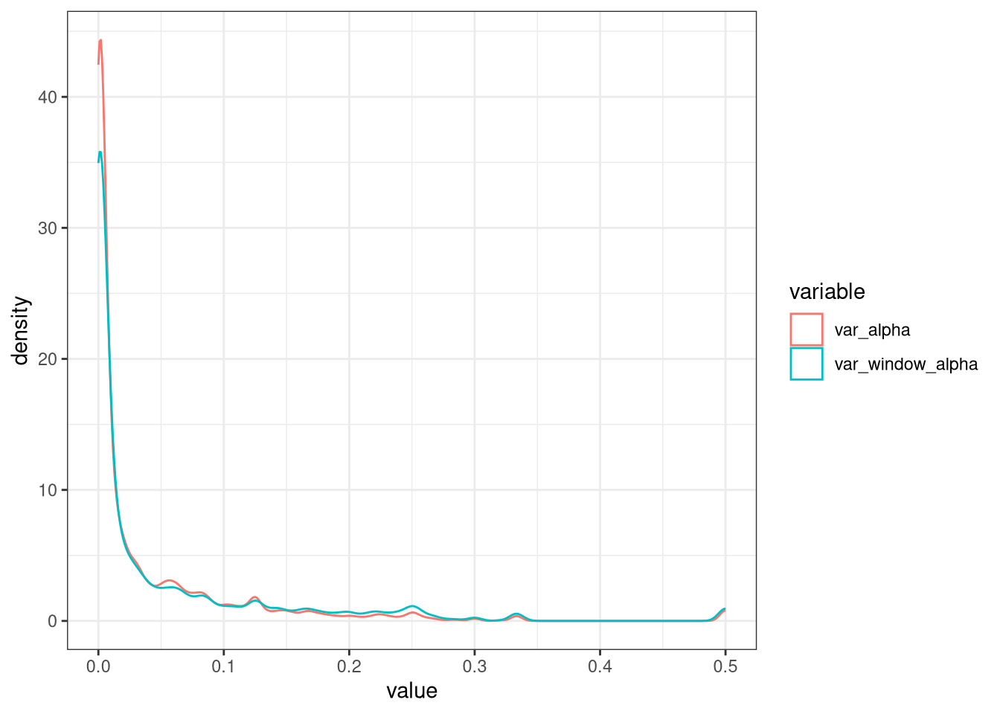
for_beta_window %>% distinct(index, read_id, alpha, window_alpha, meth_pattern, window_pattern, total, window_total) %>%
group_by(index) %>%
mutate(n_read = n(),
mean_alpha = mean(alpha),
mean_window_alpha = mean(window_alpha),
var_alpha = var(alpha),
var_window_alpha = var(window_alpha)) %>%
ungroup() %>%
.[,c(1,12:13)] %>%
reshape2::melt(id = "index") %>% distinct() %>% .[order(.$index),] %>%
ggplot(aes(x = log2(value), colour = variable)) +
geom_density() +
theme_bw()Warning: Removed 36040 rows containing non-finite outside the scale range
(`stat_density()`).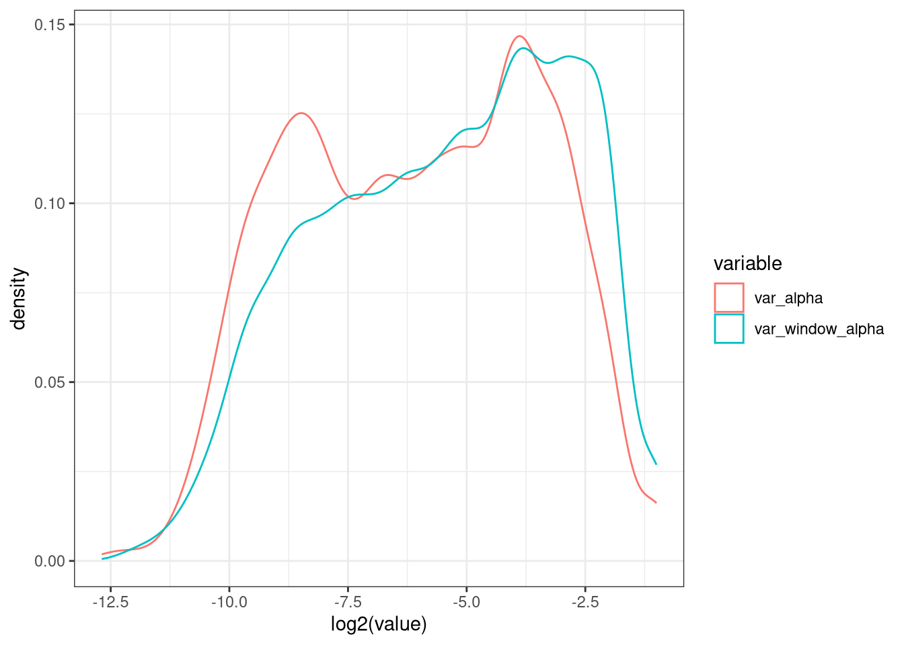
* actually looks like variance is lower in original alpha - interestingfor_beta_window %>% distinct(index, read_id, alpha, window_alpha, meth_pattern, window_pattern, total, window_total) %>%
group_by(index) %>%
mutate(n_read = n(),
mean_alpha = mean(alpha),
mean_window_alpha = mean(window_alpha),
var_alpha = var(alpha),
var_window_alpha = var(window_alpha)) %>%
ungroup() %>%
.[,c(1,12:13)] %>%
reshape2::melt(id = "index") %>% distinct() %>% .[order(.$index),] %>%
ggplot(aes(x = variable, y = value, fill = variable)) +
geom_boxplot() +
theme(legend.position = "none") +
theme_bw()Warning: Removed 25080 rows containing non-finite outside the scale range
(`stat_boxplot()`).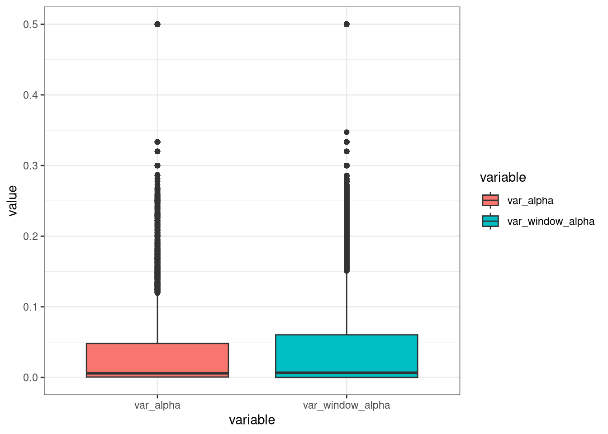
for_beta_window %>% distinct(index, read_id, alpha, window_alpha, meth_pattern, window_pattern, total, window_total) %>%
group_by(index) %>%
mutate(n_read = n(),
mean_alpha = mean(alpha),
mean_window_alpha = mean(window_alpha),
var_alpha = var(alpha),
var_window_alpha = var(window_alpha)) %>%
ungroup() %>%
.[,c(1,12:13)] %>%
reshape2::melt(id = "index") %>% distinct() %>% .[order(.$index),] %>%
ggplot(aes(x = variable, y = log2(value), fill = variable)) +
geom_boxplot() +
theme(legend.position = "none") +
theme_bw()Warning: Removed 36040 rows containing non-finite outside the scale range
(`stat_boxplot()`).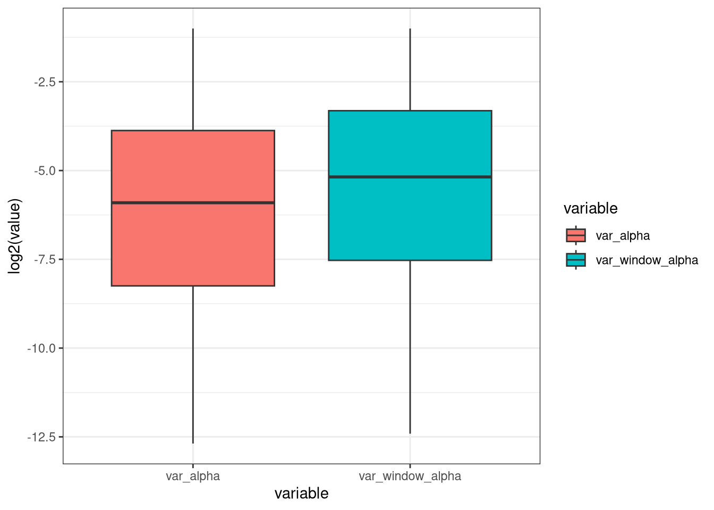
Package car
lev <- for_beta_window %>% distinct(index, read_id, alpha, window_alpha) %>%
reshape2::melt(id = c("index", "read_id"))
lev$index <- as.factor(lev$index)
lev[1:10,] index read_id variable value
1 39994598 HWI-EAS149_7:1:100:1003:1410:0:1:1 alpha 0.3333333
2 39994598 HWI-EAS149_7:1:101:1375:1223:0:1:0 alpha 0.3333333
3 39994598 HWI-EAS149_7:1:110:259:1538:0:1:1 alpha 0.3333333
4 39994598 HWI-EAS149_7:1:14:1167:499:0:1:1 alpha 0.8333333
5 39994598 HWI-EAS149_7:1:19:1288:1950:0:1:1 alpha 0.1666667
6 39994598 HWI-EAS149_7:1:46:270:1738:0:1:1 alpha 0.6666667
7 39994598 HWI-EAS149_7:1:5:133:1697:0:1:1 alpha 0.1666667
8 39994598 HWI-EAS149_7:1:61:830:1733:0:1:1 alpha 0.3333333
9 39994598 HWI-EAS149_7:1:71:467:553:0:1:1 alpha 0.8333333
10 39994598 HWI-EAS149_7:1:8:1300:1098:0:1:1 alpha 0.6666667distinct(lev, index) %>% .[1:10,] [1] 39994598 39994607 39994611 39994613 39994626 39994632 17968401 17968428
[9] 20423913 20423925
32611 Levels: 10571812 10571818 10571820 10571832 10571835 10571837 ... 50806929car::leveneTest(value ~ variable, lev)Levene's Test for Homogeneity of Variance (center = median)
Df F value Pr(>F)
group 1 0.0932 0.7602
1522162 #lev %>%
# group_by(index) %>%
# mutate(car::leveneTest(value ~ variable, .))
sessionInfo()R version 4.4.1 (2024-06-14)
Platform: x86_64-pc-linux-gnu
Running under: Rocky Linux 9.6 (Blue Onyx)
Matrix products: default
BLAS/LAPACK: FlexiBLAS OPENBLAS-OPENMP; LAPACK version 3.9.0
locale:
[1] LC_CTYPE=en_AU.UTF-8 LC_NUMERIC=C
[3] LC_TIME=en_AU.UTF-8 LC_COLLATE=en_AU.UTF-8
[5] LC_MONETARY=en_AU.UTF-8 LC_MESSAGES=en_AU.UTF-8
[7] LC_PAPER=en_AU.UTF-8 LC_NAME=C
[9] LC_ADDRESS=C LC_TELEPHONE=C
[11] LC_MEASUREMENT=en_AU.UTF-8 LC_IDENTIFICATION=C
time zone: Australia/Melbourne
tzcode source: system (glibc)
attached base packages:
[1] stats4 stats graphics grDevices utils datasets methods
[8] base
other attached packages:
[1] org.Hs.eg.db_3.20.0
[2] TxDb.Hsapiens.UCSC.hg38.knownGene_3.20.0
[3] GenomicFeatures_1.58.0
[4] AnnotationDbi_1.68.0
[5] Biobase_2.66.0
[6] ggplot2_3.5.2
[7] dplyr_1.1.4
[8] stringr_1.5.1
[9] tidyr_1.3.1
[10] plyranges_1.26.0
[11] GenomicRanges_1.58.0
[12] GenomeInfoDb_1.42.3
[13] IRanges_2.40.1
[14] S4Vectors_0.44.0
[15] BiocGenerics_0.52.0
[16] data.table_1.17.8
[17] annotatr_1.32.0
loaded via a namespace (and not attached):
[1] DBI_1.2.3 bitops_1.0-9
[3] rlang_1.1.6 magrittr_2.0.3
[5] git2r_0.36.2 matrixStats_1.5.0
[7] compiler_4.4.1 RSQLite_2.4.2
[9] png_0.1-8 vctrs_0.6.5
[11] reshape2_1.4.4 pkgconfig_2.0.3
[13] crayon_1.5.3 fastmap_1.2.0
[15] dbplyr_2.5.0 XVector_0.46.0
[17] labeling_0.4.3 utf8_1.2.6
[19] Rsamtools_2.22.0 promises_1.3.3
[21] rmarkdown_2.29 tzdb_0.5.0
[23] UCSC.utils_1.2.0 purrr_1.1.0
[25] bit_4.6.0 BSgenome.Hsapiens.UCSC.hg38_1.4.5
[27] xfun_0.52 zlibbioc_1.52.0
[29] cachem_1.1.0 jsonlite_2.0.0
[31] blob_1.2.4 later_1.4.2
[33] DelayedArray_0.32.0 BiocParallel_1.40.2
[35] parallel_4.4.1 R6_2.6.1
[37] bslib_0.9.0 stringi_1.8.7
[39] RColorBrewer_1.1-3 rtracklayer_1.66.0
[41] car_3.1-5 jquerylib_0.1.4
[43] Rcpp_1.1.0 SummarizedExperiment_1.36.0
[45] knitr_1.50 readr_2.1.5
[47] httpuv_1.6.16 Matrix_1.7-0
[49] tidyselect_1.2.1 rstudioapi_0.17.1
[51] abind_1.4-8 yaml_2.3.10
[53] codetools_0.2-20 curl_6.4.0
[55] lattice_0.22-6 tibble_3.3.0
[57] regioneR_1.38.0 plyr_1.8.9
[59] withr_3.0.2 KEGGREST_1.46.0
[61] evaluate_1.0.4 BiocFileCache_2.14.0
[63] Biostrings_2.74.1 pillar_1.11.0
[65] BiocManager_1.30.26 filelock_1.0.3
[67] carData_3.0-6 MatrixGenerics_1.18.1
[69] whisker_0.4.1 generics_0.1.4
[71] vroom_1.6.5 rprojroot_2.1.0
[73] RCurl_1.98-1.17 BiocVersion_3.20.0
[75] hms_1.1.3 scales_1.4.0
[77] glue_1.8.0 tools_4.4.1
[79] AnnotationHub_3.14.0 BiocIO_1.16.0
[81] BSgenome_1.74.0 GenomicAlignments_1.42.0
[83] fs_1.6.6 XML_3.99-0.18
[85] grid_4.4.1 GenomeInfoDbData_1.2.13
[87] restfulr_0.0.16 Formula_1.2-5
[89] cli_3.6.5 rappdirs_0.3.3
[91] workflowr_1.7.1 S4Arrays_1.6.0
[93] gtable_0.3.6 sass_0.4.10
[95] digest_0.6.37 SparseArray_1.6.2
[97] rjson_0.2.23 farver_2.1.2
[99] memoise_2.0.1 htmltools_0.5.8.1
[101] lifecycle_1.0.4 httr_1.4.7
[103] bit64_4.6.0-1